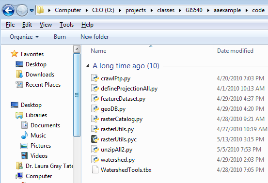

Syllabus Assignments Resources Videos Forum Data Sample scripts Instructors Project
Introduction
Project Proposal
Project Requirements and Evaluation
Submission format
How to Submit
Project Gallery
| Introduction: | back to top |
|---|
For the project, you'll apply course topics to a geospatial application area of your choice. The project will include GIS Programming in Python.
The final submission will include:
- A short write-up describing the project.
- Map files, scripts, toolboxes, and data and any other supporting files needed to test the code.
- A short (total of 10 minutes max. = project explanation + recorded demo) project presentation to the class. Distance education students can submit a video if they can not attend and give a live presentation. Distance education students making their own video can use the free software called Jing to capture it or any other video capture software they have. Jing only allows up to 5 minutes capture per video, so you may need to capture it in two parts.
The project allows students to apply what they've learned in the course to a problem that has arisen in their workplace or research. The projects often involve filtering raw data, performing geoprocessing analysis on it, and visualizing the data. Students will choose a project that is relevant to their area of interest and use their own data. The project will require Python scripting to perform data processing and build ArcMap GUIs.
For example, suppose your research routinely requires you to download spatial data that comes in a csv format that can't be loaded directly into ArcMap. You have to open it, delete the header, remove dashes from the field names, and delete extra columns. Then it takes several additional steps to add it to a map (choose the x, y fields, project it, save it as a layer) so that you can display it. If you only had to do this once or twice, it's no big deal, but since you have to do it all the time, writing some scripts to automate the process would save a great deal of time in the long run. This would be a typical project for the course.
As part of your course homework, one-third of the way through the semester, you will submit a proposal for your project. Each proposal that is submitted will be scrutinized by the instructor for appropriate application of the scripting concepts and sufficient complexity. If the proposed project is not sufficiently complex or challenging, the proposal will be rejected and a project will be assigned by the instructor, in which case the project topic is non-negotiable.
| Project proposal: | back to top |
|---|
The proposal submitted on Wolfware should communicate project objectives and help you create an organized approach. The completed project will include Python script(s) which performs some kind of batch processing and a map document which calls a Python script and a script tool which has a graphical user interface. The project topic should also be sufficiently challenging (See more about this below). For this proposal, do not include any discussion of the graphical user interface component yet. Do include the following (use roman numerals and the given titles to organize your description):
- Title: A short title indicating the topic
- Abstract: a description of the overall application problem that you would like to investigate (required).
- Data: A description of the data being processed (if known).
- Batch processing: A description of the processing problem that you want to handle with Python (required).
- Pseudocode: Pseudocode for the problem described in the previous step (required).
- Keywords: Comma separated list of keywords relating to the project. These should include topic area, data types, and tools. This is meant to help other students search for related project topics.
These proposals will be evaluated on the following criteria:
1. Is the required proposal format followed?
2. Is the idea clearly and BRIEFLY presented? (can we understand your idea?).
3. Is there batch processing in the pseudocode?
4. Is the complexity sufficient?
5. Is the pseudocode efficient and correct?
Each proposal that is submitted will be scrutinized by the instructor for appropriate application of the scripting concepts and sufficient complexity. If the proposed project is not sufficiently complex or challenging, the proposal will be rejected and a project will be assigned by the instructor, in which case the project topic is non-negotiable. Two sample proposals are provided below. Sample proposal # 1 does not meet the formatting and complexity requirements. Sample proposal #2 meets all of the requirements.
Sample proposal #1 (not complex enough and some of the required components are missing)AGRICULTURAL LAND BEST MANAGEMENT PRACTICES Abstract: The purpose of this program will be to apply farmland best management practices(BMP) to parcels of land entered by the user. Examples of BMP are stream and water body vegetation buffers, and runoff control from roads and other compacted surfaces. This program will also output area of lakes or ponds, and lengths of rivers, creeks, and roads in feet. Data: Examples of data would be shapefiles such as lakes, roads and streams. However, the ideal program would extract this data from the entire parcel of land, sort the usable shapefiles and perform the BMP on the shapefiles. Batch Processing: Out of the shapefiles the program will perform a buffer tool on all water bodies. It will also calculate length of roads and slope to determine in what lengths of road erosion control is needed. Pseudocode: OBTAIN shapefiles from workspace |
Instructor Evaluation of proposal #1: 1. Format correct? 2. Clear/brief? 3. Batch processing? 4. Is the complexity sufficient? 5. Is the pseudocode efficient and correct? OBTAIN shapefiles from workspace |
Sample proposal #2 (sufficiently complex)
| Name: Engelbert Humberdinck
(eghumber)
I. TITLE: Water Supply Model Sensitivity Analysis II. ABSTRACT: The U.S. Forest Service’s Eastern Forest Environmental Threat Assessment Center (EFTETAC) has developed a Water Supply Stress Index Model (WaSSI) that uses a set of 11 soil moisture parameters developed by the National Weather Service for use in flood forecasting. When properly calibrated, these soil moisture parameters can help accurately model daily hydrographs. However, the WaSSI model predicts water supply issues on a time frame of months to years and over areas where the parameters cannot be calibrated to actual runoff values. Ideally, a sensitivity analysis could determine which soil parameters are necessary and which could be eliminated from the model. A cursory analysis showed that only four parameters had a substantial effect on twenty year average annual runoff values. However, the model underestimates runoff during dry months, which is compensated by over estimation during wetter months. A more sophisticated analysis at the monthly time frame needs to be conducted. III. DATA: * Eleven soil moisture parameter rasters for the conterminous U.S. IV. BATCH PROCESSING: * Create 22 input files, by modifying each parameter by one standard deviation. V. PSEUDOCODE: FOR each soil parameter FOR each new input file FOR each pair of plus/minus output files FOR each index file |
| Project Requirements and Evaluation: | back to top |
|---|
- Extended write-up (10 pts) with these parts:
- Title: A short title indicating the topic.
- Synopsis: up to 4 sentences telling what your project does. (you may reuse what you submitted for the project gallery.)
- Extended abstract: (<=300 words) The abstract should give a very clear brief high-level description of the problem you're addressing and how you solve it. Assume the audience is not an expert in your subject area. Use a spelling-checker! See examples.
- Pseudocode: Pseudocode for the problem described in the previous step. Use pseudocode keywords and keep level of detail broad.
- Acknowledgements: Acknowledge help received writing the code or any scripts you used which were authored by others (aside from course examples)
- Keywords: Comma separated list of keywords relating to the project. These should include topic area, data types, and tools. This is meant to help other students search for related project topics.
- Presentation (10 pts) with two parts:
- Presentation 1: Explain the project(<= 5 minutes)
--File should be named: unityID_Pres1
--Describe the problem the code solves (screen recording with voiceover). Be clear, concise, and creative.
--Include a checklist of the required components (see Code Evaluation part I below). List how the requirement was met --or why it was not.
--If applicable, note any advanced funtionality Python that you used beyond the requirements or requiring the study of Python functionality beyond the course material.
- Presentation 2: Prerecorded demo (<=5 minutes)
--File should be named: unityID_Pres2
-- Introduce the project topic very briefly--give the project title and the goal of the project in 1-3 sentences (and a picture, if possible).
-- Demonstrate the run the code. Make sure to show the button, the interface, and the results being added automatically to the map.
-- Tell us about any extra functionality you've learned and implemented. This is your chance to brag.
-- Both distance and traditional students prerecord a video. Jing recommended for free video screen capture.
- Presentation 1: Explain the project(<= 5 minutes)
- Test run (15 pts)
In addition to your recorded demo, we will also be running it live to test portability and usability.- Submit Map files, scripts, toolboxes, test data any other supporting files needed to test the code. Test data should not be massive. If the data is massive, please submit only a small dataset. Please indicate any privacy restrictions on the data, otherwise, it may be made publicly available.
- Set default values in the graphical user interfaces so that we can run your code without assistance.
- Check for portability (if I move it to another machine, does it break?)
- Code evaluation
- Instructor feedback from 'Project core Python code' submission implemented. (10 pts)
- Required components (50 pts):
- Python geoprocessing (call arcpy tools).
- Python batch processing ('for' or 'while' loops)
- Code reuse: Define and call at least 3 user-defined reusable functions.
- Code reuse: Define a class and instantiate and use an object of this type
- Use Python script tools and script tool properties to generate an appropriate interface.
- Provide a toolbar button to launch the script tool.
- Inform the user of progress, using progressor and messages.
- Automatically display geoprocessing output in the map. (If the output is better viewed outside of ArcMap, you must still display it automatically. But also show messages so that the user knows how to find and display the visual output in a more appropriate viewer.)
- Programming style (5pts):
- Use of variables; minimal hard-coding
- Use of data structures such as lists/dictionaries to streamline code (instead of long if/elif/elif/elif... blocks.)
- Lightly commented but also self-documenting (easy to guess what's happening)
- Use of functions/modules to organize/streamline code so that related blocks of code are grouped and reusability is facilitated when possible.
- Avoid use of 'magic numbers' -- hard-coded numbers unique values with unexplained meaning and/or multiple occurrence which could (preferably) be replaced with meaningfully named variables.
- Catch exceptions, as appropriate.
- Lines of code <=80 characters each. Achieve this by using variables to hold long string arguments and using line continuation symbols as needed.
- Use docstrings.
| Submission format: | back to top |
|---|
Your files must be organized into data, documentation, and code subdirectories with just the map or main script on he top level. Be sure to test your code to make sure it works in this configuration.
The documentation subdirectory should contain the text report, the videos (distance ed. only), Powerpoint (if applicable) thumbnail image. 
The code subdirectory should contain scripts, toolboxes, executables, etc.

The data directory should contain a small sample data file which can be used to demonstrate the application, workspaces, databases, and so forth. These can be organized however it makes sense to organize them for your project. In this image, she has data arranged in subfolders, but if you just have a few input/output files, you may just want to put these on the top level of the data directory.

| How to submit: | back to top |
|---|
Final projects sometimes exceed the space available on Wolfware for submission, so we have set up a special server for this purpose. To submit your project:
IF you are using a CNR lab machine:
Type \\cnrdata.cnr.ncsu.edu\geospatial$\Education\GIS540\projectsF2014 in a Windows Explorer window.
ELSE (you not using a CNR lab machine):
Connect through a virtual private network (VPN) to get access to this directory. To do this login at vpn.ncsu.edu.
Next type\\cnrdata.cnr.ncsu.edu\geospatial$\Education\GIS540\projectsF2014 in a Windows Explorer window
For the username type: WOLFTECH\unityid and use your unity password.
--For the Project Press Release, submit your text document in the ABSTRACTS directory and submit your thumbnail image in the THUMBNAILS directory.
---Place all other project materials in your userid subdirectory as described in the "Submission Format" section on this page. If you don't see one with your id, create it. Place a file in your project directory now to confirm that you have access to it. You can add or delete files, just as you would to any directory where you have write access, so you should upload incomplete versions of your project ahead of time.
| Project Gallery: | back to top |
|---|